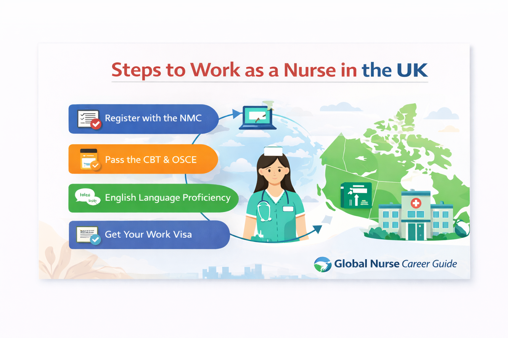

Step-by-step guide for international nurses seeking employment in the UK.
The United Kingdom actively recruits international nurses to support its healthcare system, particularly the National Health Service (NHS).
The Nursing and Midwifery Council (NMC) regulates nurses in the UK. International nurses must apply for registration with the NMC before they can practice.
Applicants must pass the Computer-Based Test (CBT), which evaluates theoretical nursing knowledge.
Most international nurses are recruited by NHS hospitals or healthcare organizations that sponsor their visas.
After arriving in the UK, nurses must pass the Objective Structured Clinical Examination (OSCE), which assesses practical clinical skills.
International nurses usually work under the Skilled Worker Visa program, which allows healthcare professionals to live and work in the UK.
